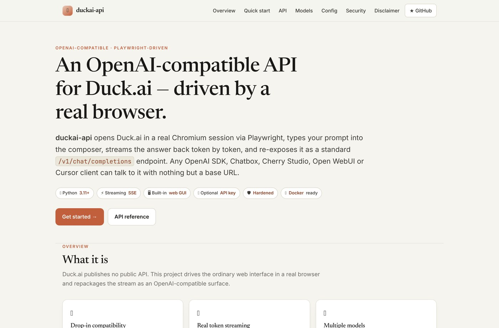
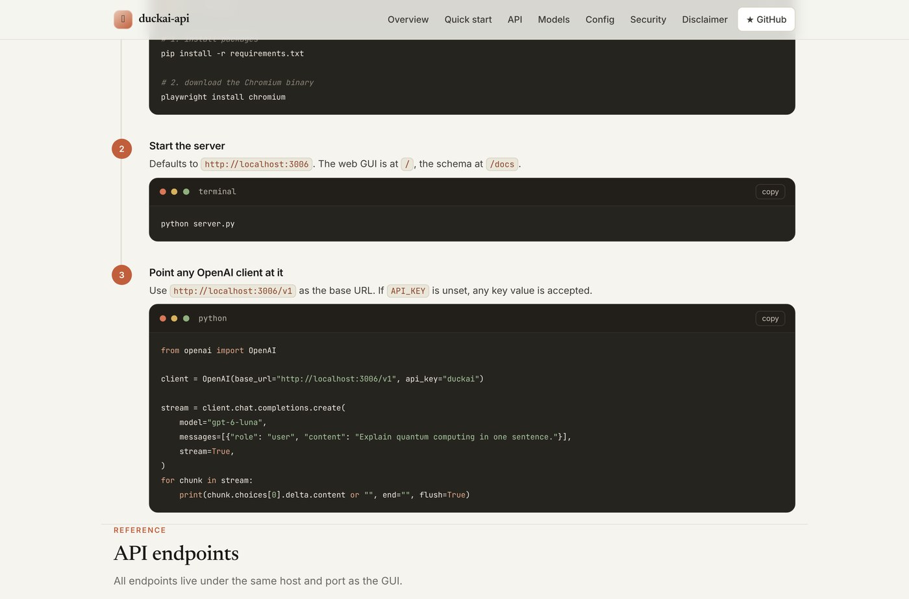

What it is
DuckAI API is a small, self-hosted service that makes DuckDuckGo's privacy-first AI Chat (duck.ai) look like a standard OpenAI-compatible API. It opens Duck.ai in a real headless Chromium session, types your prompt into the composer, streams the answer back token by token, and re-exposes it at /v1/chat/completions.
That means any client that already speaks the OpenAI format — Chatbox, Cherry Studio, NextChat, Open WebUI, Cursor, the official Python SDK, LangChain, or a plain curl — can talk to it by changing one base URL. No API key to buy, no per-token bill.

Why I built it
Duck.ai publishes no public API. It is a browser interface, protected by dynamic anti-bot challenges, and it is designed to be used by a human sitting in front of a tab. I wanted the models behind it — GPT-6 Luna, Claude Haiku 4.5, Mistral Small 4 — available to my own tools, my editor, and my scripts, without a paid key.
So the project does the obvious thing: it drives the real browser. A Playwright-controlled Chromium session solves the challenge, sends the prompt, and intercepts the outgoing Server-Sent Events stream, which the proxy reformats into OpenAI's delta.content chunks. The result is a local microservice that behaves exactly like the API your tools already expect.
Supported models
Standard OpenAI model names are mapped onto Duck.ai's models, so you can keep your existing client configs and just point them at the proxy.
| Model | Aliases | Best for |
|---|---|---|
| GPT-6 Luna | gpt-6-luna, default | Flagship general-purpose work |
| Claude Haiku 4.5 | claude-haiku-4.5, claude | Fast reasoning and code analysis |
| GPT-5.4 mini | gpt-5.4-mini, gpt-4o-mini | Lightweight, quick tasks |
| Mistral Small 4 | mistral-small-4 | Multilingual, open weights |
| GPT-OSS 120B | gpt-oss-120b | Large open-weights model |
| Gemma 4 31B | gemma-4-31b | Google's open model (beta) |
How it works
Under the hood it is a FastAPI server and a browser bridge:
- The API surface:
/v1/chat/completions(streaming and non-streaming),/v1/models, a/healthprobe, and an interactive Swagger UI at/docs. - The bridge: a persistent headless Chromium page that carries the Duck.ai session, solves challenges, and reads the SSE stream back out.
- Token isolation: every generation is tagged with a generation id, so a late packet from a cancelled request can never bleed into the next answer.
- Memory recycling: the browser page is recycled after a configurable number of requests or hours, keeping RAM and the DOM clean for 24/7 self-hosting.

localhost:3006/v1.Security & hardening
The codebase went through several rounds of adversarial review. A few of the fixes worth calling out:
- XSS-hardened frontend: every markdown payload in the bundled GUI is sanitised through DOMPurify before it renders.
- Client-disconnect cancellation: aborting the HTTP stream triggers Duck.ai's Stop generating, freeing compute instead of leaking a runaway generation.
- Deadlock-free locks: bounded lock acquisition prevents head-of-line blocking under concurrency.
- Constant-time auth: when an
API_KEYis set, credentials are compared withhmac.compare_digestto avoid timing attacks.
Run it yourself
Clone the repo, install the dependencies, and start it — the browser bridge comes up automatically. Docker Compose is supported too, with a single docker compose up -d --build.
DuckAI API is a reverse-engineered interoperability tool for personal and educational use. It is not affiliated with DuckDuckGo.